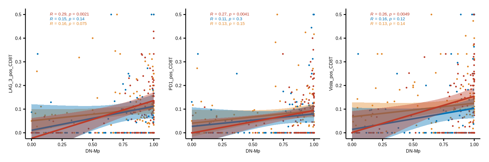
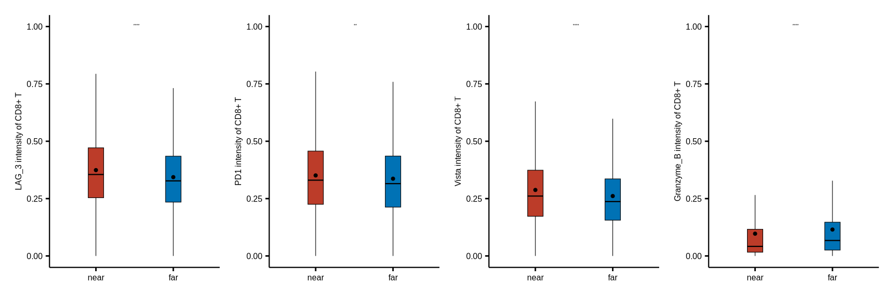
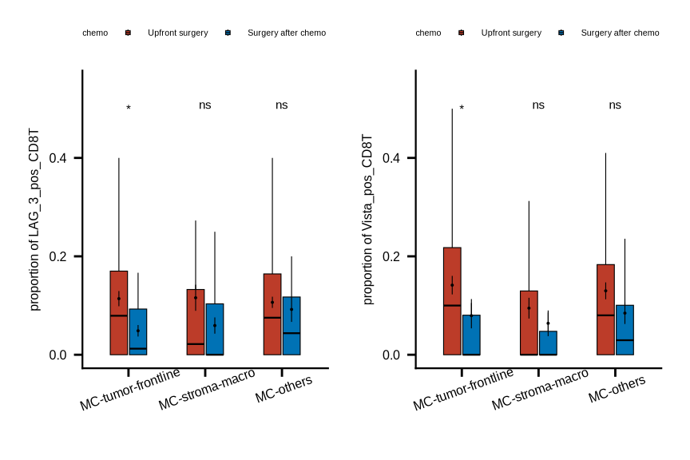

pkgs <- c("fs", "futile.logger", "configr", "stringr", "ggpubr", "ggthemes",
"vroom", "jhtools", "glue", "openxlsx", "ggsci", "patchwork", "cowplot",
"tidyverse", "dplyr", "SingleCellExperiment", "survminer", "survival")
suppressMessages(conflicted::conflict_scout())
for (pkg in pkgs){
suppressPackageStartupMessages(library(pkg, character.only = T))
}
res_dir <- "./results/sup_figure11" %>% checkdir
dat_dir <- "./data" %>% checkdir
config_dir <- "./config" %>% checkdir
#colors config
config_fn <- glue::glue("{config_dir}/configs.yaml")
ctype10_cols <- jhtools::show_me_the_colors(config_fn, "cell_type_new")
meta_cols <- jhtools::show_me_the_colors(config_fn, "meta_color")
meta_merge_cols <- jhtools::show_me_the_colors(config_fn, "meta_merge")
#read in coldata
coldat <- readr::read_csv(glue::glue("{dat_dir}/sce_coldata.csv"))
sinfo <- readr::read_csv(glue::glue("{dat_dir}/metadata_sinfo.csv"))
sample_chemo_type_list <- readr::read_rds(glue::glue("{dat_dir}/sample_chemo_type_list.rds"))
metadata <- readr::read_rds(glue::glue("{dat_dir}/metadata.rds"))
pos_cells10 <- readr::read_rds(glue::glue("{dat_dir}/pos_cell_list_10percent.rds"))
assay_cc <- readr::read_rds(glue::glue("{dat_dir}/compcounts_censored_assay.rds"))sup_figure11
sup_figure11abc
#correlation plot function
DNmac_posOther_correlation_func <- function(cld, cell_pairs2, big_type, meta_colors){
cld_nochemo_dn_noBT <- cld %>% dplyr::filter(sample_id %in% sample_chemo_type_list$no_chemo_all) %>%
dplyr::filter(meta_cluster != "MC-tumor-core") %>%
dplyr::filter(cell_type11 == "DN-mp") %>%
group_by(meta_merge, sample_id) %>% summarise(np = n())
cld_nochemo_total1_noBT <- cld %>% dplyr::filter(sample_id %in% sample_chemo_type_list$no_chemo_all) %>%
dplyr::filter(meta_cluster != "MC-tumor-core") %>%
dplyr::filter(cell_type11 %in% c("Other-mp", "DN-mp")) %>%
group_by(meta_merge, sample_id) %>% summarise(nt = n())
cld_nochemo_dn_noBT <- left_join(cld_nochemo_total1_noBT, cld_nochemo_dn_noBT, by = c("meta_merge", "sample_id")) %>%
replace_na(list(np = 0)) %>% dplyr::mutate(prop = np/nt) %>% dplyr::select(-c(nt, np)) %>% ungroup()
cld_nochemo_pos2_noBT <- cld %>% dplyr::filter(sample_id %in% sample_chemo_type_list$no_chemo_all) %>%
dplyr::filter(meta_cluster != "MC-tumor-core") %>%
dplyr::filter(cell_id %in% pos_cells10[[cell_pairs2]]) %>%
group_by(meta_merge, sample_id) %>% summarise(np = n())
cld_nochemo_total2_noBT <- cld %>% dplyr::filter(sample_id %in% sample_chemo_type_list$no_chemo_all) %>%
dplyr::filter(meta_cluster != "MC-tumor-core") %>%
dplyr::filter(cell_type11 %in% big_type) %>%
group_by(meta_merge, sample_id) %>% summarise(nt = n())
cld_nochemo_pos2_noBT <- left_join(cld_nochemo_total2_noBT, cld_nochemo_pos2_noBT, by = c("meta_merge", "sample_id")) %>%
replace_na(list(np = 0)) %>% dplyr::mutate(prop = np/nt) %>% dplyr::select(-c(nt, np)) %>% ungroup()
cld_nochemo_com <- inner_join(cld_nochemo_dn_noBT, cld_nochemo_pos2_noBT, by = c("meta_merge", "sample_id"))
cld_nochemo_com$meta_merge <- factor(cld_nochemo_com$meta_merge, levels = c(c("MC-others", "MC-stroma-macro", "MC-tumor-frontline")))
p <- ggscatter(cld_nochemo_com, x = "prop.x", y = "prop.y",
color = "meta_merge", palette = meta_colors, size = .4,
add = "reg.line", conf.int = TRUE, star.plot.lwd = .1,
cor.coef.size = .01) + xlim(0,1) +
ylim(0,1) + xlab(glue::glue("DN-Mp")) + ylab(cell_pairs2) +
stat_cor(aes(color = meta_merge), label.x = 0.15, label.y = c(0.46,0.48,0.5), size = 2) +
theme(axis.title.y = element_text(size = 6),
axis.text.y = element_text(size = 6),
axis.title.x = element_text(size = 6),
axis.text.x = element_text(size = 6),
legend.text = element_text(size = 2),
legend.title = element_text(size = 2),
legend.key.size = unit(0.1, 'cm'))
return(p)
}
coldat <- coldat %>%
dplyr::mutate(meta_merge = case_when(meta_cluster %notin%
c("MC-tumor-frontline", "MC-stroma-macro", "MC-tumor-core") ~ "MC-others",
TRUE ~ meta_cluster)) %>%
dplyr::mutate(cell_type11 = case_when(cell_type_new %in%
c("HLA-DR+CD163- mp", "HLA-DR+CD163+ mp", "HLA-DR-CD163+ mp") ~ "Other-mp",
cell_type_new %in% c("HLA-DR-CD163- mp") ~ "DN-mp",
TRUE ~ cell_type_new))
big_type <- "CD8+ T cell"
#a
cp2 <- "LAG_3_pos_CD8T"
pa <- DNmac_posOther_correlation_func(cld = coldat, cell_pairs2 = cp2,
big_type = big_type, meta_colors = meta_merge_cols)
pa <- pa + scale_y_continuous(limits=c(0,0.5), oob = scales::rescale_none) +
theme(legend.position = "none")
ggsave(glue::glue("{res_dir}/sfig11a_DN_mac_cor_with_LAG3CD8T.pdf"), pa, width = 4, height = 4)
#b
cp2 <- "PD1_pos_CD8T"
pb <- DNmac_posOther_correlation_func(cld = coldat, cell_pairs2 = cp2,
big_type = big_type, meta_colors = meta_merge_cols)
pb <- pb + scale_y_continuous(limits=c(0,0.5), oob = scales::rescale_none) +
theme(legend.position = "none")
ggsave(glue::glue("{res_dir}/sfig11b_DN_mac_cor_with_PD1CD8T.pdf"), pb, width = 4, height = 4)
#c
cp2 <- "Vista_pos_CD8T"
pc <- DNmac_posOther_correlation_func(cld = coldat, cell_pairs2 = cp2,
big_type = big_type, meta_colors = meta_merge_cols)
pc <- pc + scale_y_continuous(limits=c(0,0.5), oob = scales::rescale_none) +
theme(legend.position = "none")
ggsave(glue::glue("{res_dir}/sfig11c_DN_mac_cor_with_VistaCD8T.pdf"), pc, width = 4, height = 4)
pa | pb | pc
sup_figure11d
comcc_t <- as.data.frame(t(assay_cc))
comcc_t$cell_id <- rownames(comcc_t)
cld_df <- left_join(coldat, comcc_t, by = "cell_id") %>%
dplyr::select(sample_id, cell_id, a_smooth:CD25)
list_closecell_distance <- readr::read_rds(glue::glue("{dat_dir}/distance_rds/TB_list_closecell_dist_k1_CD8T_to_Macrophage_DN.rds"))
df_closecell_distance <- do.call("rbind", list_closecell_distance)
df_closecell_distance <- left_join(df_closecell_distance, cld_df, by = c("from_cell" = "cell_id")) %>%
dplyr::filter(sample_id %in% sample_chemo_type_list$no_chemo_all)
df_closecell_distance <- df_closecell_distance %>% dplyr::mutate(group = case_when(distance < median(distance) ~ "near",
TRUE ~ "far"))
df_new_group <- df_closecell_distance %>% group_by(to_cell) %>%
dplyr::summarise(group_all = paste(group, collapse = ";")) %>%
dplyr::mutate(group_new = case_when(str_detect(group_all, "near") ~ "near",
TRUE ~ "far")) %>% dplyr::select(-group_all)
df_closecell_distance <- df_closecell_distance %>% left_join(df_new_group, by = "to_cell")
df_closecell_distance$group_new <- factor(df_closecell_distance$group_new, levels = c("near", "far"))
pl <- list()
for (i in c("LAG_3", "PD1", "Vista", "Granzyme_B")) {
pl[[i]] <- ggboxplot(df_closecell_distance, x = "group_new", y = i, fill = "group_new", outlier.shape = NA,
palette = pal_nejm("default")(2), xlab = NULL,size = 0.2, width = .2) + theme_classic() +
scale_y_continuous(limits=c(0,1), oob = scales::rescale_none) +
stat_summary(fun.data = "mean_se", geom = "pointrange", show.legend = F,
position = position_dodge(.12), size = .025, color = "black") +
theme(strip.placement = "outside",
panel.spacing = unit(3, "points"),
strip.background = element_blank(),
strip.text = element_text(face = "bold", size = 5),
axis.text.x = element_text(size = 6, colour = "black"),
axis.text.y = element_text(size = 6, colour = "black"),
axis.title.y = element_text(size = 6),
axis.title.x = element_blank(),
axis.line.x = element_line(size = 0.4, colour = "black"),
axis.line.y = element_line(size = 0.4, colour = "black"),
axis.ticks = element_line(colour = "black"),
legend.position="none") + ylab(glue::glue("{i} intensity of CD8+ T")) +
stat_compare_means(aes(label = ..p.signif..), label.x.npc = "center", size = 1,
label.y.npc = "top", show.legend = T)
ggsave(glue::glue("{res_dir}/sfig11d_{i}_intensity_of_CD8T_to_DNmac.pdf"), pl[[i]], width = 2, height = 3)
}
pl[["LAG_3"]] | pl[["PD1"]] | pl[["Vista"]] | pl[["Granzyme_B"]]
sup_figure11e
cd8_prop <- coldat %>% dplyr::filter(cell_type_new == "CD8+ T cell" & meta_merge %notin% "MC-tumor-core") %>%
group_by(sample_id, meta_merge) %>% dplyr::mutate(nt = n()) %>%
ungroup() %>% dplyr::select(sample_id, meta_merge, nt) %>% distinct() %>%
dplyr::filter(sample_id %in% c(sample_chemo_type_list$no_chemo_no_punc, sample_chemo_type_list$chemo))
cols <- c("Surgery after chemo" = "#0072B5FF", "Upfront surgery" = "#BC3C29FF")
for (i in c("LAG_3_pos_CD8T", "Vista_pos_CD8T")) {
pos_prop <- coldat %>% dplyr::filter(cell_type_new == "CD8+ T cell" & meta_merge %notin% "MC-tumor-core") %>%
dplyr::filter(cell_id %in% pos_cells10[[i]]) %>%
group_by(sample_id, meta_merge) %>% dplyr::mutate(np = n()) %>%
ungroup() %>% dplyr::select(sample_id, meta_merge, np) %>% distinct()
pos_prop <- left_join(cd8_prop, pos_prop, by = c("sample_id", "meta_merge")) %>%
replace_na(list(np = 0)) %>% dplyr::mutate(prop = np/nt)
pos_prop_chemo <- pos_prop %>%
dplyr::mutate(chemo = case_when(sample_id %in% sample_chemo_type_list$no_chemo_no_punc ~ "Upfront surgery",
sample_id %in% sample_chemo_type_list$chemo ~ "Surgery after chemo"))
pos_prop_chemo$meta_merge <- factor(pos_prop_chemo$meta_merge, levels = c("MC-tumor-frontline", "MC-stroma-macro", "MC-others"))
pos_prop_chemo$chemo <- factor(pos_prop_chemo$chemo, levels = c("Upfront surgery", "Surgery after chemo"))
stat_test <- pos_prop_chemo %>%
group_by(meta_merge) %>% rstatix::wilcox_test(prop ~ chemo, p.adjust.method = "none")
stat_test <- stat_test %>% mutate(p.adj.signif = case_when(p >= 0.05 ~ "ns",
p >= 0.01 & p < 0.05 ~ "*",
p >= 0.001 & p < 0.01 ~ "**",
p >= 0.0001 & p < 0.001 ~ "***",
p < 0.0001 ~ "****",
TRUE ~ "ns"))
stat_test <- stat_test %>%
rstatix::add_xy_position(x = "meta_merge", dodge = 0.9, fun = "median_iqr")
stat_test$y.position <- 0.5
pl[[i]] <- ggplot(pos_prop_chemo,
aes(x = meta_merge, y = prop)) +
geom_boxplot(aes(fill = chemo), width = .5, #show.legend = FALSE,
outlier.shape = NA, linewidth = .2, color = "black") +
stat_summary(aes(fill = chemo, color = chemo), fun.data = "mean_se", geom = "pointrange", show.legend = F,
position = position_dodge(.5), fatten = .2, size = .2, stroke = .5, linewidth = .2, color = "black") +
scale_fill_manual(values = cols) +
scale_colour_manual(values = cols) +
ylab(glue::glue("proportion of {i}")) +
scale_y_continuous(limits=c(0, 0.55), oob = scales::rescale_none) +
stat_pvalue_manual(stat_test, x = "meta_merge", tip.length = 0.01, hide.ns = F, label = "p.adj.signif", size = 2) +
theme_bmbdc() +
theme(title = element_text(size = 6),
axis.ticks = element_line(colour = "black"),
axis.title.y = element_text(size = 6),
axis.text.y = element_text(size = 6, colour = "black"),
axis.title.x = element_blank(),
axis.text.x = element_text(size = 6, colour = "black", angle = 20),
axis.line.x = element_line(linewidth = 0.4),
axis.line.y = element_line(linewidth = 0.4),
legend.position="top",
legend.text = element_text(size = 4),
legend.title = element_text(size = 4),
legend.key.size = unit(0.1, 'cm'))
ggsave(glue::glue("{res_dir}/sup_figure11e_{i}_prop_chemo_ornot.pdf"), pl[[i]], width = 4, height = 4)
}
pl[["LAG_3_pos_CD8T"]] | pl[["Vista_pos_CD8T"]]